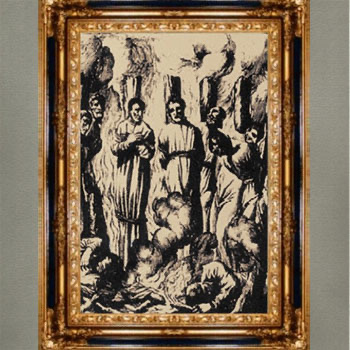

Isusovački blaženici
Brat
Bl. Ambrozije Fernandes
1551. – 1620.
Portugalski isusovački brat u Nagasakiju služio je kao prevoditelj i misionar. Ostao je uz progonjene kršćane te umro u teškim zatvorskim uvjetima.
Tekst je preveden i prilagođen uz pomoć umjetne inteligencije.

Izvor slike
- Spomendan
- 6. veljače
- Zaštitništvo
- Nije navedeno u izvoru
- Životni vijek
- 1551. – 1620.
- Djelovanje
- Misije i evangelizacija · Pisanje, znanost i umjetnost · Progoni i progonstvo · Mučeništvo
- Razdoblje
- 16., 17. stoljeće
- Rođenje — dostupni podaci
- 1551.; dan i mjesec nisu potvrđeni u provjerenom izvoru.
- Mjesto rođenja
- Portugal
- Datum smrti
- 02.06.1620.
- Mjesto smrti/mučeništva
- Zatvor u Suzuti kod Ōmure, Japan
- Okolnosti smrti/mučeništva
- Umro u zatvoru od iscrpljenosti, oskudice i nečovječnih uvjeta zatočeništva.
- Uloga
- Brat
- Mučenik
- Da
- Ostale oznake
- Misionar u Indiji i Japanu; kateheta i isusovački brat
- Pripadnost
- Isusovac
- Drugi oblici imena
- Ambrósio Fernandes · Ambrósio
Životopis
Ambrósio Fernandes krenuo je 1571. iz Portugala u Indiju nadajući se materijalnom uspjehu. Ondje je služio u vojsci i radio za trgovce. Opasna plovidba prema Japanu navela ga je na drukčiju odluku: obećao je stupiti među isusovce ako brod preživi nevrijeme. U Družbu Isusovu primljen je 1579.
Njegov je redovnički život protekao u Nagasakiju. Brinuo se za kuću i subraću, prevodio te pomagao misijskom radu. Nakon naredbe o protjerivanju misionara 1614. ostao je potajno služiti kršćanima i pomagati Karlu Spinoli. Uhićeni su zajedno s katehistom Ivanom Kingocuom. Do zatvora su odvedeni s užetom oko vrata.
Povjesničarka Helena Rodrigues, oslanjajući se na isusovačke povijesne izvore, navodi njegovo podrijetlo iz Aldeije do Sisto kod Porta. Zavjete brata pomoćnika položio je 1593., a poslije pomagao i redovničkom prokuratoru.
Zatvor u Suzuti bio je ograđen kolcima i nije imao krov. Zatočenici su trpjeli glad, ljetnu vrućinu i zimske nepogode. Fernandes, već gotovo sedamdesetogodišnjak, umro je nakon trinaest mjeseci takva zatočenja, 1620. Njegova smrt prethodila je za dvije godine pogubljenju Spinole i drugih drugova.
Tekst je preveden i prilagođen uz pomoć umjetne inteligencije.
Pročitaj više na izvornoj stranici ↗